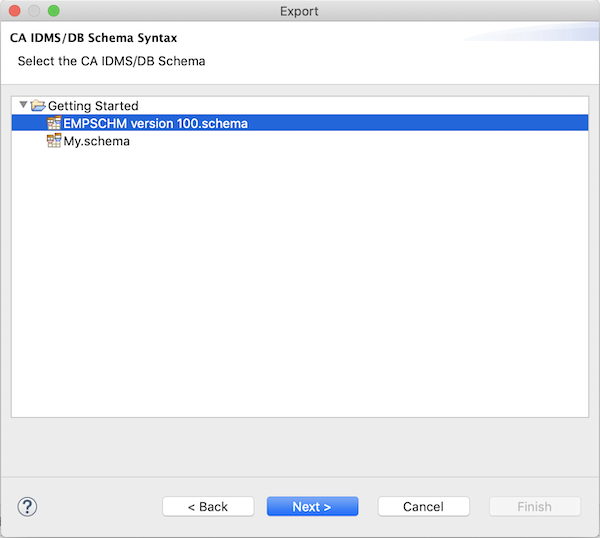

Exporting Diagrams
You can share the .schema or .schemadsl files you have created with your colleagues in a number of ways:
- By means of a shared network drive
- By e-mail
- Through a version control system like
GIT or
Subversion
- ...
Since a .schema or .schemadsl file (a diagram file) contains each and every aspect of an IDMS schema, you can also
export the complete IDMS schema compiler syntax to a text file of your choice. All you need to do is start the
diagram editor's Export wizard via the File/Export... menu item:
Select the CA IDMS/DB Schema Syntax export wizard in the Export wizard selection dialog:
On the Export wizard's first page, select the diagram for which you want to generate IDMS schema compiler syntax:

On the next wizard page, select the output file, i.e. the file you want the IDMS schema compiler syntax written
to:
Finally, on the last wizard page, you can currently set 1 option: whether you want the entities (areas,
records and sets) to be sorted before generating syntax or not:
Sorting entities can be useful when comparing 2 files that each contain IDMS schema compiler syntax for the same schema,
after you have done some modifications (though comparing the .schemadsl file before and after may be a better practice;
note that the diagram editor does not have a specialized Eclipse compare editor [yet]).
When you press the Finish button, the IDMS schema compiler syntax will be written to the file you selected.